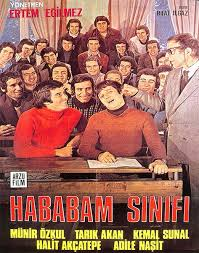

Esaretin Bedeli“Korku sizi tutsak eder. Umut ise özgür bırakır.” Shawshank Hapishanesinde iki kez müebbet hapse çarptırılan Andy Dufrense, hapishane şartlarına ve zor koşullara karşı çabucak pes edeceği düşünülse de ayakta kalmak için büyük direnç gösterir. Uzun yıllarını hapishanede geçirmiş eski mahkum Red ile büyük bir dostluk kuran Andy Dufrense, etrafında yer alan mahkumları da kısa sürede etkiler ve onları parmaklıklar arasında olsalar bile özgürlüğün ve umudun asla yok edilmeyeceğine inandırır. Andy Dufrense bizlere hayatta sabrın, bilginin ve zekanın tüm zorlukların üstesinden gelebileceğinin bir kanıtı niteliğindedir. |
|  |
Hababam SınıfıÖğrencilik hayatları haylazlık ve tembellik üzerine kurulu olan bir sınıf dolusu matrak öğrencinin, Özel Çamlıca Lisesi’nde yaşadığı yer yer eğlenceli, yer yer de dokunaklı öyküleri anlatan film, Hababam Sınıfı serisinin ilk filmidir. Keskin zekaları sayesinde tüm öğretmenlerini avuçlarında oynatıp okul düzeni ve eğitim sistemini alaşağı eden bu birbirinden renkli karakterdeki öğrenciler hem okulun hem de sinemamızın en yaramaz sınıfı olma özelliğinde. Ancak bu hükümdarlık okula atanan yeni müdür muavinin gelişiyle sarsıldığında, Hababam Sınıfı daha önce hiç karşılaşmadığı türden bir disiplin anlayışına ve zekaya sahip olan Mahmut Hoca tarafından unutulmaz derslere tabi tutulur. |

|
BabaBaba, 40’lar ve 50’lerin Amerika’sında, bir İtalyan mafya ailesinin destansı öyküsünü konu alıyor. Don Corleone’nin kızı Connie’nin düğününde, ailenin en küçük oğlu ve bir savaş gazisi olan Michael babasıyla barışır. Bir suikast girişimi, Don’u artık işleri yönetemeyecek duruma düşürünce, ailenin başına Michael ve ağabeyi Sonny geçer. Danışmanları Tom Hagen’in de yardımlarıyla diğer ailelere savaş açan Corleone ailesi, eski moda yöntemleri de değiştirmeye başlar. Mario Puzo’nun çok satan kitabından Puzo ve yönetmen Francis Ford Coppola tarafından sinemaya uyarlanan film o yıl En İyi Film, En İyi Erkek Oyuncu ve En İyi Uyarlama Senaryo dallarında Oscar kazanmıştır. Yapılan araştırmalar sonucu Türkiye'de en fazla izlenen ve satılan film olma özelliği de taşır. |